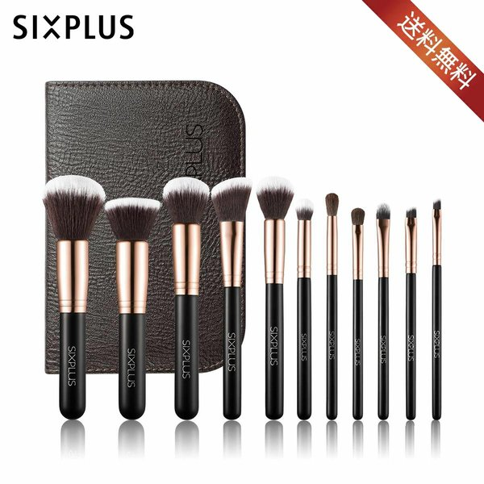
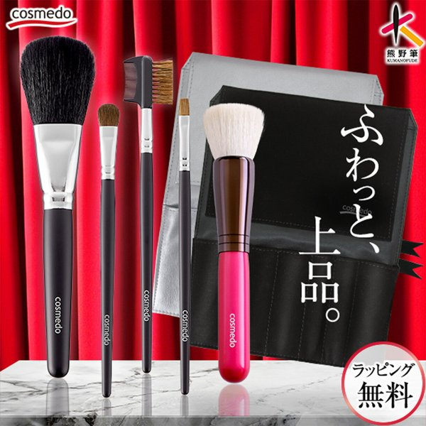
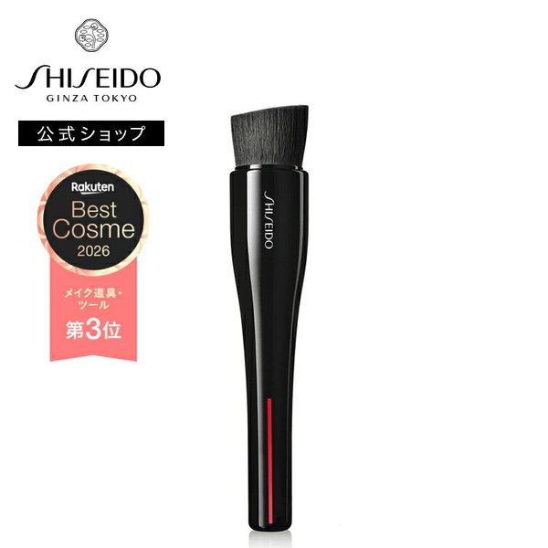
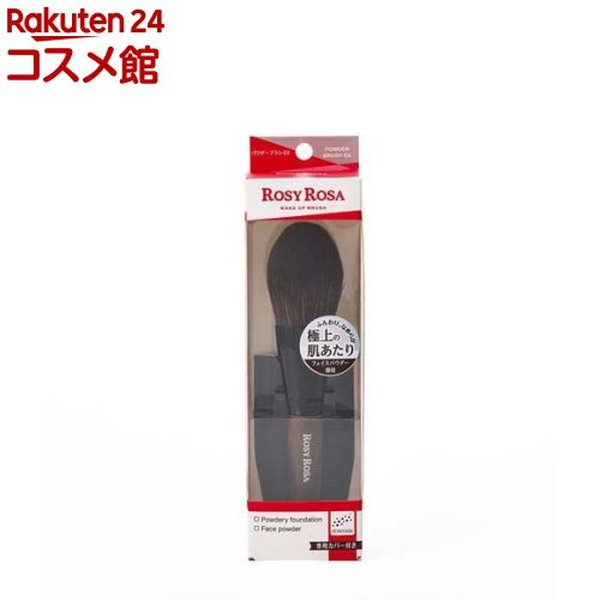
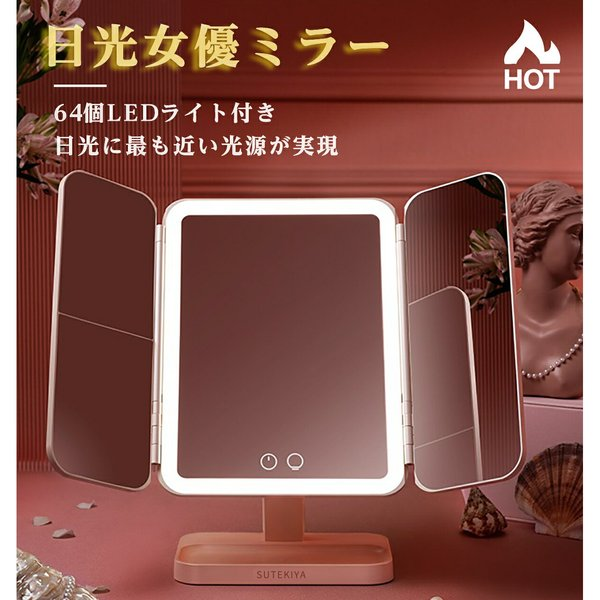
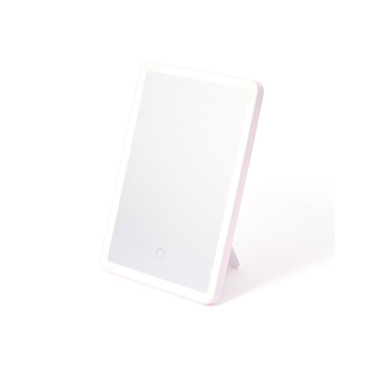
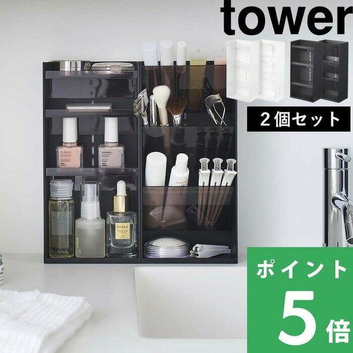
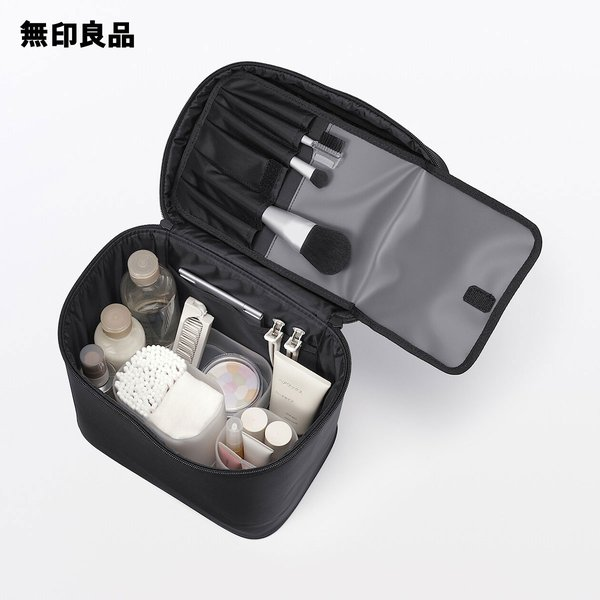
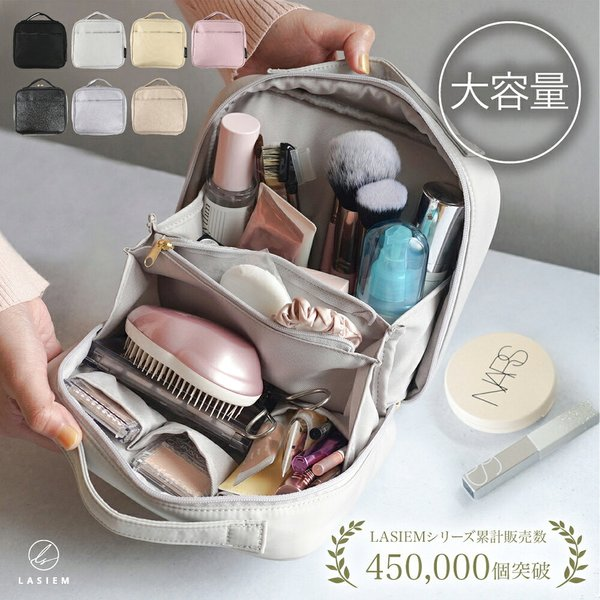
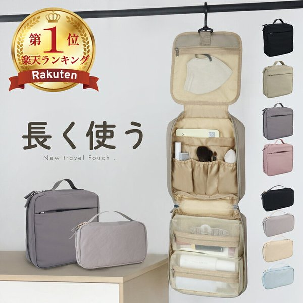

【2026年最新】メイクブラシ＆LED女優ミラー10選｜SIXPLUS・熊野筆・資生堂・ロージーローザの化粧ブラシとコスメ収納・化粧ポーチを実売価格で比較
メイクの仕上がりは、道具で変わる部分が思っているより大きいです。同じファンデでも、ブラシで薄く伸ばすとムラが消え、パウダーを大きめのブラシで乗せると肌が均一に見えます。鏡の明るさが足りないと、家を出てから化粧の濃さに気づくこともあります。
選ぶ軸は3つです。まずブラシの本数と役割。最初の1セットなら、フェイス・チーク・アイシャドウ・リップが揃う5〜11本のセットが扱いやすいです。次に鏡の明るさと形。LEDの灯数と三面鏡かどうかで、朝の支度のしやすさが変わります。最後に収納と持ち運び。ポーチと収納ケースを決めておくと、ドレッサーが散らかりません。
本記事では、楽天市場で人気・高評価のメイクブラシ・LEDミラー・コスメ収納・化粧ポーチ10選を、実売価格とレビュー評価つきで写真付き紹介します。
- おすすめ10選 スペック・特徴比較表
- BEST 1｜SIXPLUS 貴族のゴールド メイクブラシ 11本セット（ポーチ付き）
- BEST 2｜熊野筆 メイクブラシ 5本セット（ケース付き）スターターセットプラス
- BEST 3｜資生堂 HASU FUDE ファンデーション ブラシ
- BEST 4｜ロージーローザ パウダーブラシEX
- BEST 5｜SUTEKIYA 日光女優ミラー LED三面鏡
- BEST 6｜Francfranc ルチオ LEDスタンドミラー M
- BEST 7｜山崎実業 tower コスメ収納ケースセット（2個セット）
- BEST 8｜無印良品 再生ナイロンメイクボックス・黒 M
- BEST 9｜LASIEM メイクポーチ 大容量 自立型
- BEST 10｜吊り下げトラベルポーチ メイクポーチ
- 【読者負担0円】買わなくても得する無料サービス
- まとめ：メイクブラシ・LEDミラー10選の選び方
| 順位 | 商品名 | ブランド | 最大の特徴・おすすめ理由 | 総合評価 |
|---|---|---|---|---|
| BEST 1 | SIXPLUS 貴族のゴールド メイクブラシ 11本セット（ポーチ付き） | SIXPLUS（シックスプラス） | 11本で顔のパーツごとに使い分けられる | 4.63 |
| BEST 2 | 熊野筆 メイクブラシ 5本セット（ケース付き）スターターセットプラス | 熊野筆（くまのふで） | 天然毛の穂先で粉が均一にのる | 4.57 |
| BEST 3 | 資生堂 HASU FUDE ファンデーション ブラシ | 資生堂（SHISEIDO） | 毛先のカーブで小鼻の周りまで塗れる | 4.66 |
| BEST 4 | ロージーローザ パウダーブラシEX | ロージーローザ（ROSY ROSA） | 毛量が多く粉含みがよい | 4.70 |
| BEST 5 | SUTEKIYA 日光女優ミラー LED三面鏡 | SUTEKIYA（ステキヤ） | 64灯LEDで顔全体が明るい | 4.58 |
| BEST 6 | Francfranc ルチオ LEDスタンドミラー M | Francfranc（フランフラン） | 卓上に置けるコンパクトなサイズ | 4.50 |
| BEST 7 | 山崎実業 tower コスメ収納ケースセット（2個セット） | 山崎実業（tower） | 2個セットで重ねて使える | 4.71 |
| BEST 8 | 無印良品 再生ナイロンメイクボックス・黒 M | 無印良品 | 再生ナイロンで軽い | 5.00 |
| BEST 9 | LASIEM メイクポーチ 大容量 自立型 | LASIEM（ラシエム） | 大きめブラシも入る容量 | 4.71 |
| BEST 10 | 吊り下げトラベルポーチ メイクポーチ | ノーブランド企画品（トラベルメイクポーチ） | 吊り下げ式で洗面台が広く使える | 4.65 |
SIXPLUS 貴族のゴールド メイクブラシ 11本セット（ポーチ付き）

メイクブラシ11本と収納ポーチをまとめたセットです。フェイス用の大きなブラシからチーク、アイシャドウ、リップ用の小さな筆まで、役割の違う11本が揃っています。毛は柔らかい合成毛で、軸はゴールド。ポーチがあるので、ドレッサーに置いても旅行に持って行っても使いやすい構成です。楽天市場での実売価格は約3,999円（2026年11月時点）。
- 11本で顔のパーツごとに使い分けられる
- 収納ポーチ付きで持ち運べる
- 柔らかい毛で肌当たりがやさしい
- 本数が多いので、洗うときは1本ずつ乾かす手間がかかる
熊野筆 メイクブラシ 5本セット（ケース付き）スターターセットプラス

広島県熊野で作られる化粧筆の5本セットです。フェイス用からポイント用まで役割の違う5本と、収納ケースが付いています。天然毛の穂先は肌に当てたときに柔らかく、粉を薄く均一にのせやすいのが特徴です。楽天市場での実売価格は約7,800円（2026年11月時点）。
- 天然毛の穂先で粉が均一にのる
- 日本製の熊野筆で長く使える
- ケース付きで立てて収納できる
- 天然毛は洗ったあとに穂先の形を整えて乾かす必要がある
資生堂 HASU FUDE ファンデーション ブラシ

資生堂のHASU FUDEシリーズのファンデーションブラシです。蓮の花びらを思わせるカーブの毛先で、頬に当てて滑らせるようにファンデを塗れます。毛先が斜めにカットされているので、小鼻の横や目の下のような細かい部分にも届きます。楽天市場での実売価格は約2,530円（2026年11月時点）。
- 毛先のカーブで小鼻の周りまで塗れる
- ファンデのムラを整えやすい
- 資生堂の公式ショップから買える
- 定期的に専用クリーナーで洗う必要がある
ロージーローザ パウダーブラシEX

毛量を多くしたパウダーブラシです。穂先が広くふんわりしているので、パウダーを頬全体に一度にのせられます。1本持っておくと、付属のパフを使うより短時間でベースメイクが整います。楽天市場での実売価格は約2,200円（2026年11月時点）。
- 毛量が多く粉含みがよい
- 穂先が広く時短になる
- プチプラ価格帯で買い足しやすい
- 穂先が大きいので、アイメイクには別に小さなブラシが要る
SUTEKIYA 日光女優ミラー LED三面鏡

64灯のLEDライトを備えた三面鏡の卓上ミラーです。正面と左右の鏡で横顔まで映せるので、髪型やチークの入りを同時に確認できます。明るさと色温度を切り替えられ、部屋の照明が暗くても顔全体が明るく見えます。楽天市場での実売価格は約4,980円（2026年11月時点）。
- 64灯LEDで顔全体が明るい
- 三面鏡で横顔まで確認できる
- 明るさと色を切り替えられる
- 電源の取り回しが必要なので、コンセントかUSBの位置を先に決める
Francfranc ルチオ LEDスタンドミラー M

フランフランのルチオ LEDスタンドミラー Mは、白いスタンド型の卓上ミラーです。LEDライトが付いていて、ドレッサーに置かずに洗面台や机の上で使えます。角の取れたすっきりした形なので、部屋に出しっぱなしでもインテリアになじみます。楽天市場での実売価格は約3,401円（2026年11月時点）。
- 卓上に置けるコンパクトなサイズ
- LEDライト付きで暗い場所でも使える
- 白い本体で部屋になじむ
- レビューが6件と50件未満なので、光量は実際に点けて確かめたい
山崎実業 tower コスメ収納ケースセット（2個セット）

山崎実業のtowerシリーズのコスメ収納ケース2個セットです。引き出しの中を仕切って、リップやアイシャドウ、ブラシを分けて入れられます。同じ形のケースを重ねられるので、化粧品が増えたら買い足して高さを出せます。楽天市場での実売価格は約3,960円（2026年11月時点）。
- 2個セットで重ねて使える
- 引き出しで小物を分けられる
- towerシリーズで買い足しやすい
- 高さのあるボトルは引き出しに入らない
無印良品 再生ナイロンメイクボックス・黒 M

再生ナイロンを使った黒のメイクボックスです。Mサイズは約24×16.5×23cmで、化粧水のボトルやブラシをまとめて入れられます。ファスナーで閉じられるので、中身を見せずに洗面所の棚やクローゼットに置けます。楽天市場での実売価格は約2,990円（2026年11月時点）。
- 再生ナイロンで軽い
- 黒なので汚れが目立ちにくい
- ファスナーで閉じて収納できる
- レビューが1件と50件未満なので、縫製とファスナーの動きは届いてから確かめたい
LASIEM メイクポーチ 大容量 自立型

大きめのブラシも入る容量のメイクポーチです。底が広く作られていて、置くと自立するので、出先で中身を広げたままメイクできます。内側に仕切りがあり、ポーチの中でリップや下地が散らばりません。楽天市場での実売価格は約3,280円（2026年11月時点）。
- 大きめブラシも入る容量
- 自立するので出先で使いやすい
- 仕切りで中身を分けられる
- 大きいぶん、小さなバッグのインナーポーチにはかさばる
吊り下げトラベルポーチ メイクポーチ

フックで吊り下げて使えるトラベル用のメイクポーチです。洗面台のバーやホテルのフックに掛ければ、狭い場所でも中身を広げられます。ポケットが複数に分かれていて、ブラシとスキンケア用品を分けて収められます。楽天市場での実売価格は約2,180円（2026年11月時点）。
- 吊り下げ式で洗面台が広く使える
- ポケットが分かれていて整理しやすい
- 旅行かばんに入る薄さ
- ブランド表記のない企画品なので、ファスナーの動きは届いてから確かめたい
この記事の商品を買う前に、まずは無料で得する選択肢をチェック。どれも登録・利用は0円で、無料期間中に解約すれば料金はかかりません。読みたい雑誌がある人、ポイントを貯めたい人、アンケートなら気軽という人、それぞれに合うものを選べます。
初回31日無料・無料期間中に解約すれば0円 → 楽天ポイントモール｜登録無料で毎日ポイ活
買い物なしでもポイントが貯まる無料サービス → 楽天インサイト｜アンケートに答えてポイント
登録無料・すきま時間のアンケートで貯まる → 楽天カード｜年会費永年無料
新規発行・年会費ずっと0円 →
4つのサービスの違いと使い分けは「出費0円で得する！買わずにポイントが貯まる無料サービス厳選4選」でまとめています。
💡 まとめ：メイクブラシ・LEDミラー10選の選び方
メイク道具は、ブラシ・鏡・収納の3つを揃えると、朝の支度がひと続きになります。仕上がりを整えたいならSIXPLUSの11本セットか熊野筆の5本セット、部分的に買い足すなら資生堂のHASU FUDEとロージーローザのパウダーブラシEX。鏡は明るさを優先するならSUTEKIYAの日光女優ミラー、置き場所を取らずに済ませるならFrancfrancのルチオ。収納は山崎実業のtowerと無印良品のメイクボックス、持ち運びはLASIEMのメイクポーチと吊り下げトラベルポーチに分けると使い分けやすくなります。まずブラシと鏡を決め、収納は化粧品の量を数えてから買うと、余計なものを増やさずに済みます。
楽天市場では「5と0のつく日」や「お買い物マラソン」などのキャンペーンに合わせて購入すると、ポイント還元が最大化してお得に手に入ります。ぜひチェックしてみてくださいね。